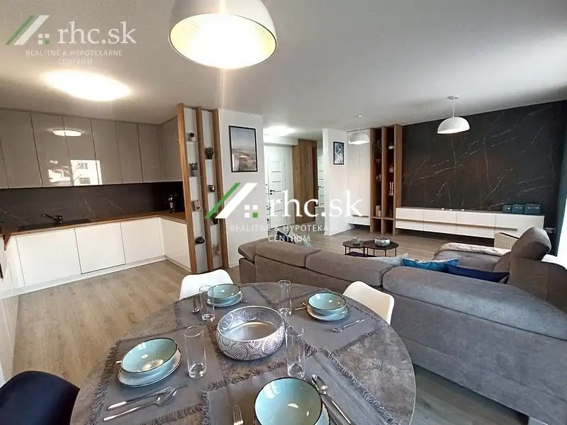
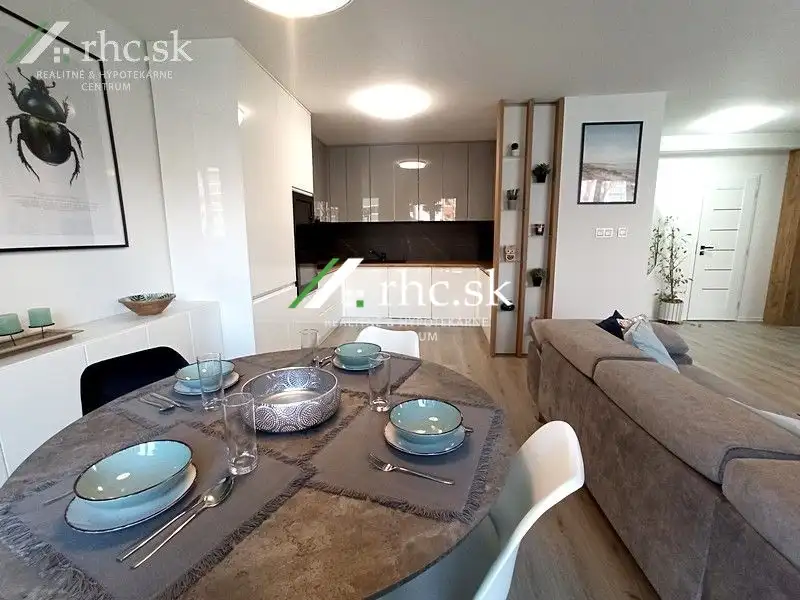
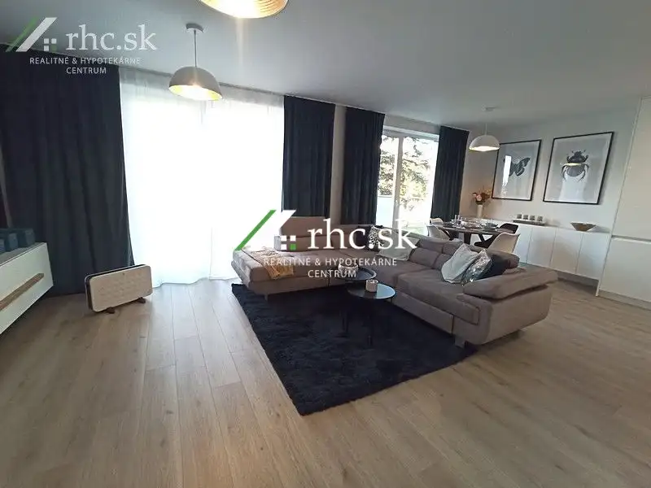
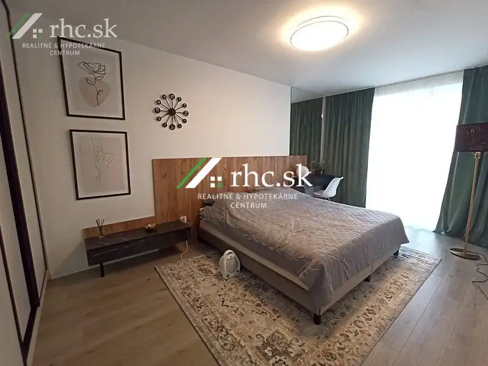
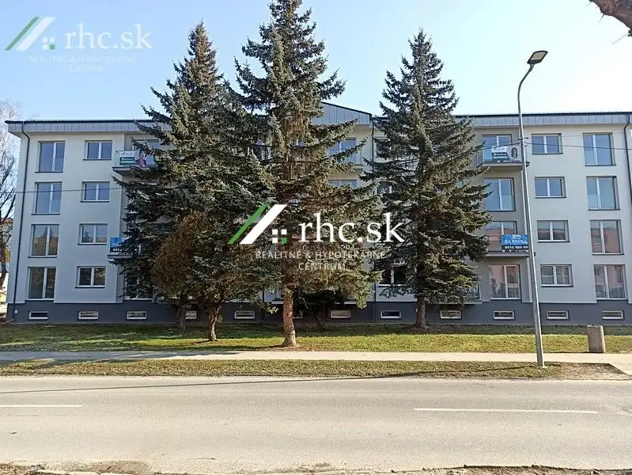
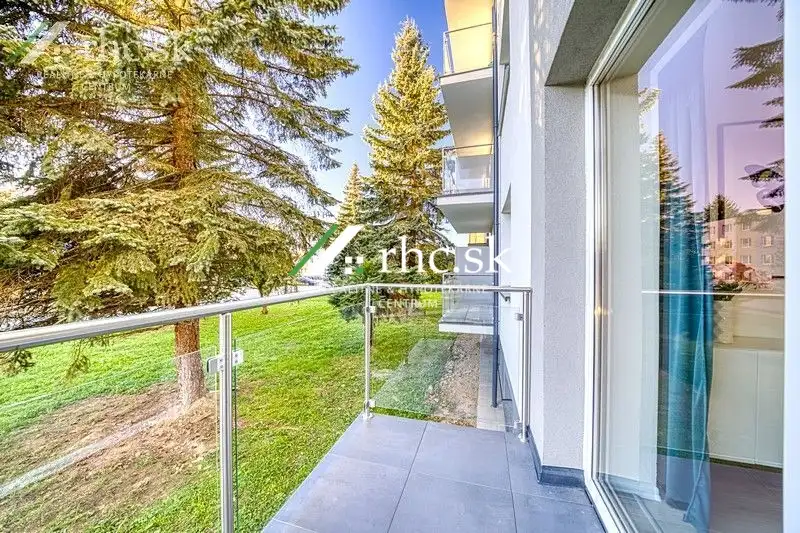

Moderný bytový dom s najnovšími technológiami. - Matice Slovenskej, Stropkov
Stropkov






- Dispozícia3-izbový
- Plocha85 m²
- Poschodie1. z 4
- StavNovostavba
- Energetická triedaA
O nehnuteľnosti
Predstavujeme Vám výnimočný bytový dom, ktorý sa stáva novou ikonou pohodlného bývania široko-ďaleko. Spája moderný štýl s najnovšími technológiami nielen pre ponúkaný nadštandardný komfort ale aj efektivitu prevádzky pri minimálnych mesačných nákladoch. V bytovom dome nájdete pokročilé technológie vrátane podlahového vykurovania a stropného chladenia úspornými a ekologickými tepelnými čerpadlami. To je zárukou vysokého komfortu bývania, doprevádzané minimálnymi prevádzkovými nákladmi a ešte k tomu aj eco - friendly udržateľnému životnému štýlu. V tejto rezidencii nájdete 1-izb., 2-izb. a 3-izb. byty, ktoré sú zariadené v štandarde, to zn. vypínače, zásuvky, hygienická maľba, podlahy, obklady, dvere so zárubňami a kúpeľňa so sanitou. Váš nový domov bude pripravený na nasťahovanie sa. Kuchynskú linku, svietidlá a ostatné zariadenia si vyberiete podľa Vášho vkusu. O bezpečie Vášho domova sa postarajú protipožiarne dvere zn. Porta Doors. Plastové okná a päťkomorové francúzske okná príjemne presvetľujú každý byt a tým vytvárajú útulnú a zdravú atmosféru. Tieto priestranné byty s mimoriadne štedrou výmerou Vám ponúkajú možnosť prispôsobiť si interiér svojim predstavám, čím si vytvoríte vhodné miesto pre seba a svoju rodinu. K dispozícii sú 2-izb.-3-izb. byty s balkónmi, kde si môžete dopriať rannú šálku kávy, či večerný pohár vína pri západe slnka. Ku každému bytu patrí aj pivničná kobka. Do budúcna budú k dispozícii aj parkovacie miesta alebo prestrešené státia s odkladacím priestorom. Moderná kotolňa s tepelnými čerpadlami zaisťuje efektívne a nízko nákladové bývanie bez zaťaženie fondu opráv. V bytovom komplexe Pasion v Stropkove na ulici Matice Slovenskej máte všetko, čo potrebujete pre moderný a pohodlný život. Blízke okolie ponúka široké možnosti pre kultúrne aj športové aktivity, kde si celá rodina príde na svoje. Pre inšpiráciu a lepšiu predstavu je pripravený ukážkový byt, zariadený skúseným architektom, kde ste všetci srdečne pozvaní. Tak neváhajte, zavolajte a okúste výhodu komfortu, úspory a ekológie, keďže Vaše nové bývanie, o ktorom ste snívali, je na dosah ruky. Výhody:• novostavba• tepelné čerpadlá• stropné chladenia• podlahové kúrenie• výmera bytu• výmera balkónov• nízke nákladyVybavenosť: balkón, bezpečnostné dvere, plastové oknáKontakt: Lenka FlešárováEmail: flesarova@rhc.skTel.: 0905 106 019Nehnuteľnosť ID: LF0479
Parametre
- Cena vrátane energií
- Nie
- Druh
- 3 izbový byt
- Dátum zverejnenia
- 05. 03. 2026
- Energetický certifikát budovy
- A
- Orientácia
- Západná, Východná
- Podlažie
- 1
- Počet nadzemných podlaží
- 4
- Rok kolaudácie
- 2024
- Rok výstavby
- 1960
- Stav nehnuteľnosti
- Novostavba
- Typ
- Predaj
- Typ konštrukcie
- Tehlová
- Vybavenie
- Balkón, Pivnica
- Vykurovanie
- Tepelné čerpadlo
- Úžitková plocha
- 85 m²